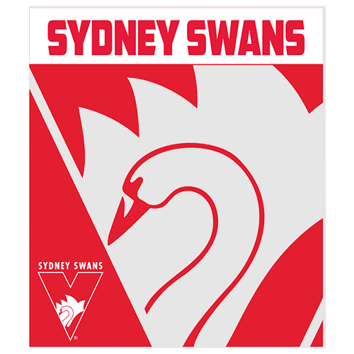
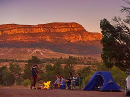
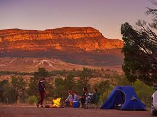
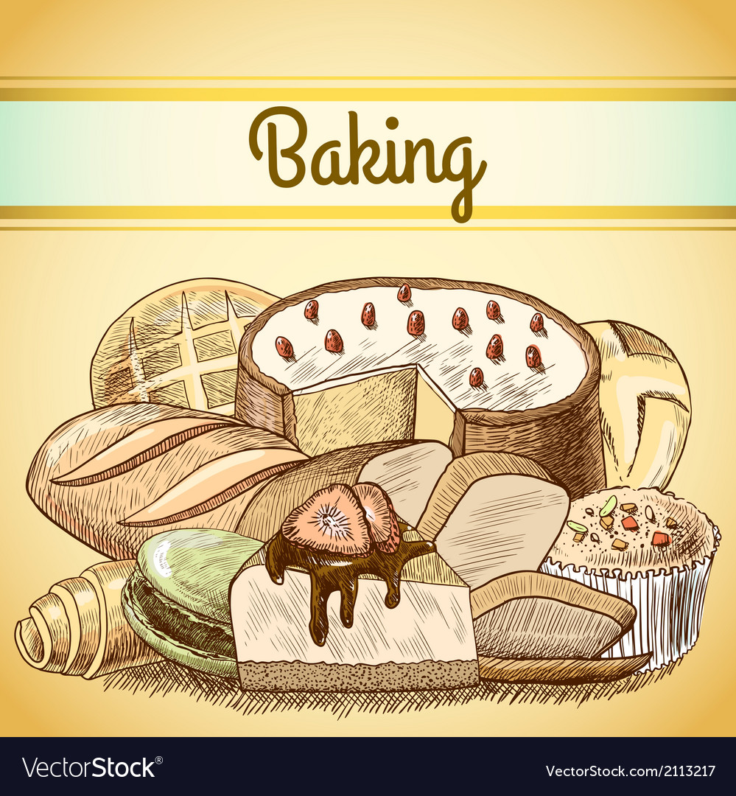
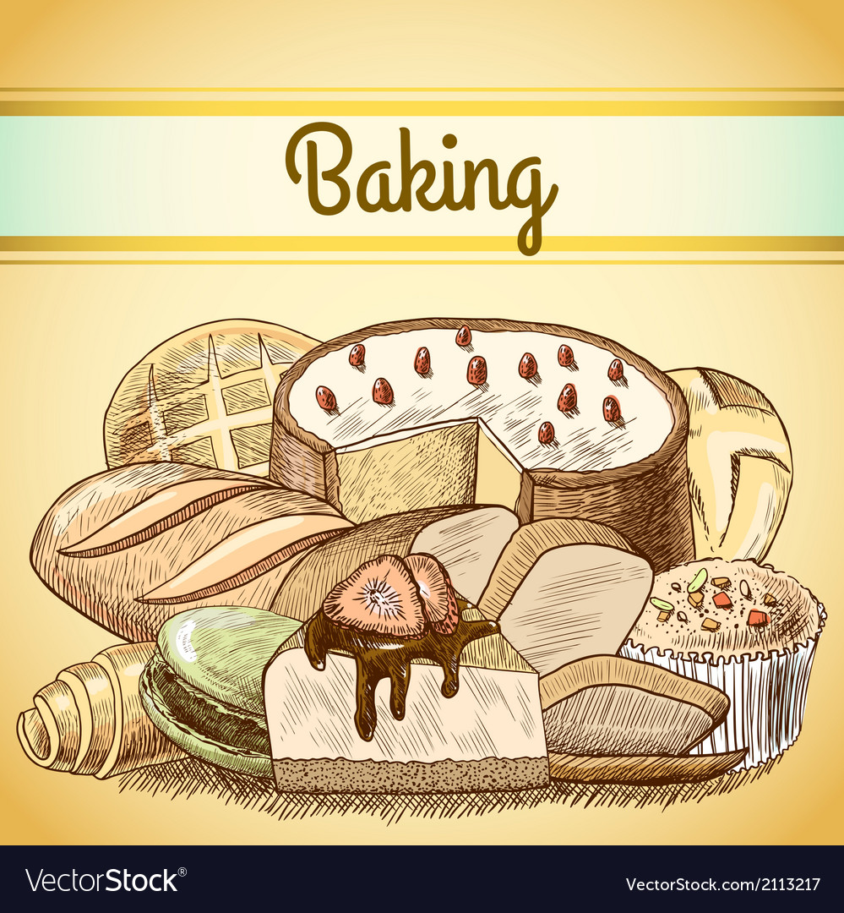

About Me:
My name is Michelle Lawrence, originally from the Philippines currently residing in Canberra, Australia for the last 3 years.
During my college years I majored in several programming languages including but not limited to C++, VISUAL BASIC, VISUAL FORXPRO, TURBO C and HTML.
I spent 3 years working in Taiwan on contract for Silicon Power as a Production Technician.
During the last 5 years I have been out of the workforce taking time to raise my 5 year old daughter. Now that my little princess is off to school starting a new chapter
in her life. It's time for me to pursue the next chapter in my life, following my dreams of becoming a professional programmer.
I have always had a passion for programming and find it exciting learning and programming with new languages.
I'm seeking to get a start in the I.T INDUSTRY as a JUNIOR DEVELOPER somewhere where I can harvest and further develop my core skillsets.
I'm currently developing my skills in PYTHON, JAVASCRIPT, CSS, PHP and refreshing my skills in HTML, C++, and VISUAL BASIC.
Taking pride in my work with a methodical approach maintaining an emphasis on attention to detail.
Currently seeking an enjoyable and rewarding environment where my skills are challenged and look forward to the opportunity in proving myself a valuable asset to my future employer.
My Hobbies and Likes:
 

 
